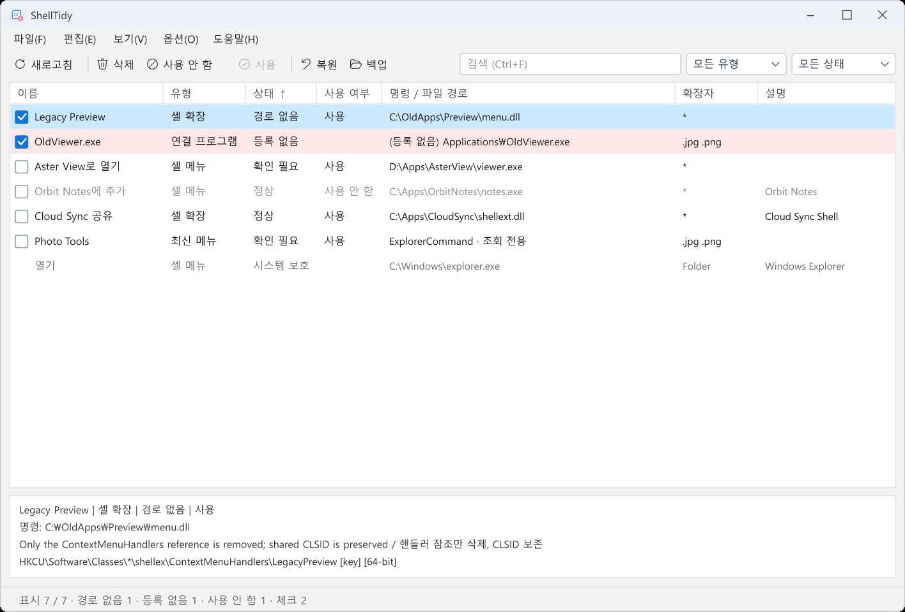

어디에 남았는지 확인
모든 파일 확장자를 검색하고 연결 프로그램과 일반 셸 메뉴를 한 창에 표시합니다. 상세 정보에서 ProgID와 실제 레지스트리 위치를 확인하세요.
쓰지 않는 앱의 흔적이 우클릭 메뉴에 남아 있나요?
실행 경로를 확인하고, 오래된 등록만 골라 정리하세요.
WINDOWS 10 / 11 x64 · PORTABLE · MIT LICENSE
| Noteleaf | 경로 없음 | F:\OldApps\Noteleaf | |
| AsterView | 시스템 보호 | F:\Apps\AsterView | |
| AsterView | 경로 없음 | F:\OldApps\AsterView |
설명용 예시입니다.
UI PREVIEW
메뉴 막대·도구 모음·목록으로 구성한 현재 UI에 가상의 앱과 경로를 넣어 재구성한 화면입니다.

A CLEARER CONTEXT MENU
앱 이름이 같아도 실행 경로가 다르면 다른 등록입니다. 지금 쓰는 등록과 예전 흔적을 구분할 수 있게 보여 줍니다.
모든 파일 확장자를 검색하고 연결 프로그램과 일반 셸 메뉴를 한 창에 표시합니다. 상세 정보에서 ProgID와 실제 레지스트리 위치를 확인하세요.
경로 없음·등록 없음·중복 의심 필터로 목록을 좁히세요. 같은 실행 명령의 여러 확장자 참조는 함께 다루고, 선택한 등록만 백업 후 삭제합니다. 지우기 망설여지는 메뉴는 등록을 남긴 채 사용 안 함으로 바꿀 수 있습니다.
잘못 고른 등록은 백업에서 복원하세요. 현재 값과 충돌하면 덮어쓰지 않고 알려 드립니다. 변경 후 탐색기 재시작은 직접 선택할 수 있습니다.
A PRECISE SCOPE
등록 정리와 앱 제거는 다른 작업입니다. 실행 파일·사용자 문서·설치 디렉터리는 건드리지 않습니다.
LegacyDisable 값이나 Shell Extensions\Blocked 차단으로 사용 안 함을 지정하고 되돌릴 수 있습니다.OPEN SOURCE · VERSION 0.0.2
git clone https://github.com/deuxdoom/ShellTidy.git
cd ShellTidy
msbuild ShellTidy.vcxproj /p:Configuration=Release /p:Platform=x64
# 빌드 결과
.\dist\ShellTidy.exeVisual Studio C++ x64 빌드 도구와 Windows SDK가 필요합니다. 정적 런타임을 포함하므로 완성된 EXE를 실행할 때 별도 런타임 설치가 필요하지 않습니다.
백업은 기본적으로 %LOCALAPPDATA%\ShellTidy\Backups에 저장합니다. 삭제 전 디스크에 백업을 확정하고, 복원할 때 현재 값과 충돌하는지 확인합니다.
HKCU 항목의 일반적인 정리에는 필요하지 않습니다. 쓰기 권한이 부족한 등록을 처리할 때만 UAC 작업자를 요청합니다. 사용자 하이브 혼동을 막기 위해 같은 Windows 계정에서의 승격만 지원합니다.
선택한 Windows 연결 등록만 정리합니다. 프로그램 설치 파일, Markdown 문서, Obsidian Vault는 삭제하지 않습니다. 앱이 다시 등록하거나 다른 출처가 남아 있으면 메뉴에 다시 나타날 수 있습니다.
격리 레지스트리에서 삭제·복원·사용 안 함/사용·기본 앱 보호·충돌·백업 실패 등 자동 테스트를 수행했습니다. Windows 11에서는 목록 조작, 삭제·복원, 사용 안 함/사용, Explorer 재시작을 실제로 사용해 확인했습니다. Windows 10은 아직 검증하지 않았습니다. 자세한 내용은 검증 기록에서 확인할 수 있습니다.